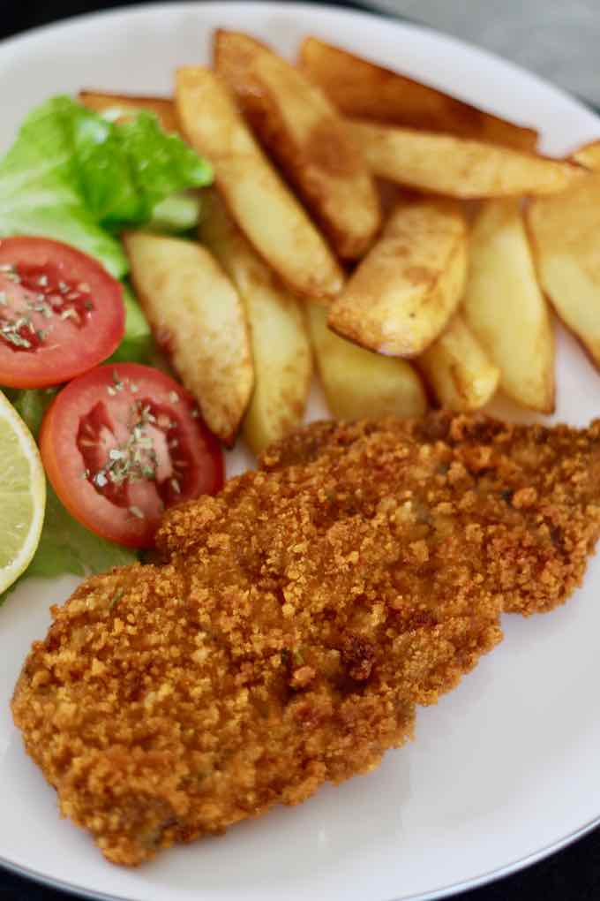

Milanesas

La milanesa argentina es una rebanada de carne empanada y frita, un clásico de la cocina sudamericana y una variante del famoso plato italiano de milanesa de ternera.
Ingredientes
- 1 kg de solomillo de ternera , en rodajas finas (de aprox. ½ pulgada de grosor)
- 2 huevos , batidos
- 500 g de pan rallado
- 2 dientes de ajo , picados
- 3 cucharadas de perejil picado
- Sal
- Pimienta negra
- Aceite vegetal (para freír)
Instrucciones
- Retire el exceso de grasa y los nervios de las rebanadas de carne.
- Ablande las rebanadas de carne muy ligeramente con un mazo.
- Mezcle el ajo y el perejil con los huevos batidos, la sal y la pimienta.
- Sumerja las rebanadas de carne en los huevos batidos, mezcle bien y reserve en un lugar fresco durante 45 minutos.
- Vierta el aceite en una sartén a fuego medio-alto y caliente a 170°C.
- Cubra generosamente cada rebanada de carne con el pan rallado.
- Fría la milanesa unos minutos por cada lado.
- Retírela de la sartén y colóquela en un plato forrado con toallas de papel.